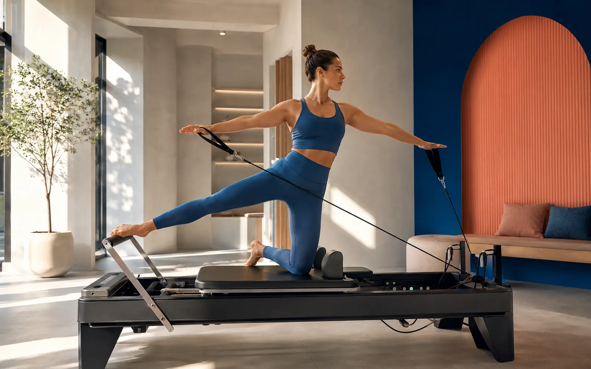

Movement becomes identity.
Type changes scale and position with the same controlled tension as the training method.
DESIGN STUDY 02 / WELLNESS

The assignment
The buyer wants to feel stronger but may be uncertain about the equipment or whether the studio is for them. The design pairs desire with a concrete class path instead of stopping at lifestyle imagery.
Type changes scale and position with the same controlled tension as the training method.
Coral signals action, cobalt holds the system together and acid is reserved for live availability.
Method, class level, schedule and the first-session path connect across separate pages.
Four-page demonstration
What is proven
Your business, your visual argument